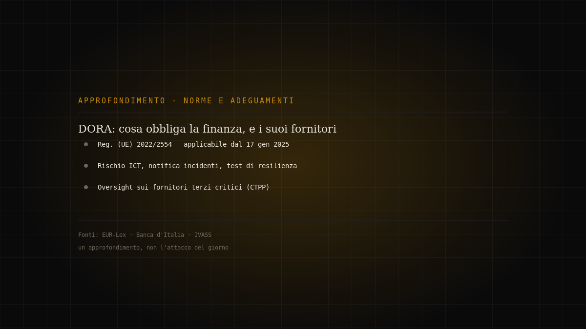
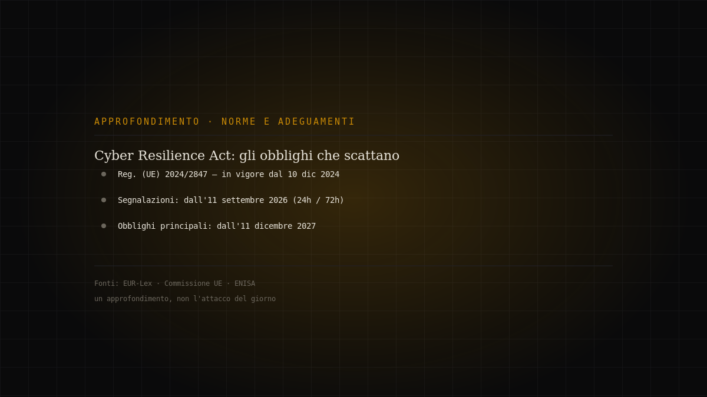

Tema · Compliance
Norme e adeguamenti
Le regole europee che governano sicurezza e dati, e perché non sono solo burocrazia.

Dossier in questa sezione
3 dossierDORA, un anno dopo: cosa obbliga davvero il settore finanziario, e perché tocca anche i fornitori IT
Non un attacco, ma la cornice di resilienza dentro cui il settore finanziario europeo deve reggere agli incidenti informatici. Il Regolamento (UE) 202…
Approfondimento editoriale · fonti ufficiali · medium
Continua a leggere →
Il modulo che muove i pagamenti, preso senza un login: CVE-2026-46817 su Oracle E-Business Suite
Oracle Payments è il motore di pagamento dentro Oracle E-Business Suite: è il punto in cui le applicazioni finanziarie dell'azienda parlano con b…
Non attribuito (prima osservazione su honeypot Defused; nessuna campagna né attore pubblici) · critical
Continua a leggere →
Cyber Resilience Act: cosa scatta l'11 settembre 2026, e cosa aspetta il 2027
Non un attacco, ma una scadenza che si avvicina. Il Cyber Resilience Act — Regolamento (UE) 2024/2847 — è in vigore dal 10 dicembre 2024, ma i suoi ob…
Approfondimento editoriale · fonti ufficiali · medium
Continua a leggere →Il tema in breve
Tre pilastri europei
Il quadro normativo europeo poggia su regolamenti e direttive che si intrecciano. Il GDPR (Reg. UE 2016/679) governa il trattamento dei dati personali. La NIS2 (Dir. UE 2022/2555) impone misure di sicurezza e obblighi di notifica agli operatori di settori critici. Il DORA (Reg. UE 2022/2554) fa lo stesso per il settore finanziario, con regole sulla resilienza operativa digitale e sui fornitori ICT critici.
Dalla carta alla pratica
L'adeguamento non è compilare un modulo: è un processo. Analisi del rischio, misure tecniche e organizzative proporzionate, procedure di notifica degli incidenti entro le tempistiche previste, governance con responsabilità del vertice. NIS2, in particolare, sposta la conformità dal reparto IT al consiglio di amministrazione.
Perché conviene, non solo perché è obbligatorio
Le stesse misure che le norme richiedono — inventario degli asset, gestione delle patch, controllo degli accessi, piani di risposta — sono quelle che riducono il rischio reale. La conformità fatta bene non è un costo separato dalla sicurezza: è la sicurezza, scritta in modo verificabile.
Domande frequenti
- Qual è la differenza fra GDPR e NIS2?
- Il GDPR protegge i dati personali; la NIS2 impone misure di cybersicurezza e notifica degli incidenti agli operatori di settori critici. Possono applicarsi entrambi.
- Cos'è il DORA?
- Il Digital Operational Resilience Act (Reg. UE 2022/2554): regole di resilienza operativa digitale per il settore finanziario e i suoi fornitori ICT critici.